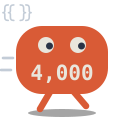
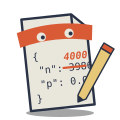
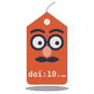
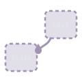
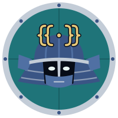

G2
G1
G7
G7
G12
G9


manuscript-guard
Every number traceable to its source.
basilechretien.github.io/manuscript-guard
A paper is full of numbers.
Each one should come from somewhere.
Type one in by hand, and it drifts from the analysis.
manuscript-guard finds it, and says where.
Bind it to the result, and it follows the analysis.
A number typed into the text, bound to nothing — G2
A results file edited by hand — G1
A retracted work, still cited — G7
A DOI that names another work — G7
The plan changed after the first results, and nothing said — G12 warns
The analysis changed since the Methods were read — G9
Some mistakes no check can see.
A co-author reads those. manuscript-guard asks them, one page each.
Check a paper in your browser, or start one.